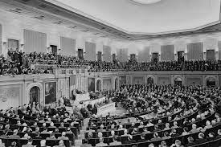

About Filibusters
A filibuster is a term for action designed to prolong a debate and delay or prevent a vote on a bill, resolution, amendment, or other debatable question. "Prior to 1917 the Senate rules did not provide for a way to end debate and force a vote on a measure. That year, the Senate adopted a rule to allow a two-thirds majority to end a filibuster, a procedure known as "cloture." In 1975 the Senate reduced the number of votes required for cloture from two-thirds of senators voting to three-fifths of all senators duly chosen and sworn, or 60 of the 100-member Senate"(U.S. Senate, March 24, 2021). Filibusters were made to slow the process of debates and other voting procedures. Filibusters were a tactic of removing the long speech tactic for politicians because before politicians used long speeches to delay action but these filibusters put a stop to those speeches by making them shorter. Furthermore before filibusters were an action there was such thing as taking a bill to death because the bill would never been processed from the delaying of it from long speeches. The earliest filibusters led to the demands of a "cloture", which is a method of ending a debate and brining a question to a vote. A type of filibuster that is common to Americans is a marathon speech by a small group of senators or even a single senator. "Traditionally, the Senate filibuster was reserved for only the most controversial issues, but its use has escalated in recent years, often slowing business in the chamber to a halt. Some lawmakers acknowledge that the filibuster, which has effectively set a 60-vote supermajority requirement for passing legislation in the Senate, could doom many of the proposals they have championed, including meaningful reforms on issues ranging from health care to climate change to gun control. Behind this dysfunction, the filibuster also has a troubling legacy: it has often been used to block civil rights legislation intended to combat racial discrimination"(Brennan Center for Justice, October 30, 2020). Filibusters are usually used in the most debated questions but there have been cases were they used a filibuster in a different setting. Two types of filibusters are a "talking" type and a "silent" type. The "talking" type is for a senator to hold the floor by standing and talking for as long as they could. The "silent" type is anytime a group of senator simply threatens a filibuster, the Senate majority leader and deny to call a vote. Filibusters have changed a lot since they were made. "The use of the filibuster, once reserved for only the most controversial issues, has increased dramatically in recent years alongside growing polarization in Washington. There have been more than 2,000 filibusters since 1917; about half have been in just the last 12 years. Critics argue that this increased use has slowed business in the Senate to a halt, often entangling the chamber in procedural maneuvering instead of substantive debate and, ultimately, lawmaking"(Brennan Center for Justice, October 30, 2020).
(Milwaukee Independent, September 08, 2022)
Filibusters has been used in these instances and the dates that they happened:
- "A Deadly Drink" May 29, 1908
- "Senate Adopts Cloture Rule" Mar 8, 1917
- "Free Speech in Wartime" Oct 6, 1917
- "Huey Long Filibusters New Deal Legislation" Jun 12-13, 1935
- "Mr. Smith" Comes to Washington" Oct 17, 1939
- "Arrests Compel Senate Quorum" Nov 14, 1942
- "Wayne Morse Sets Filibuster Record" Apr 24-25, 1953
- "Turning Point" Aug 14, 1962
- "Civil Rights Filibuster Ended" Jun 10, 1964
- "Filibuster Defeats Supreme Court Appointment" Oct 1, 1968
- "William Proxmire Keeps the Senate in Session Overnight" Sep 28, 1981
- "Alfonse D'Amato's Old-Time Filibuster" Oct 5, 1992